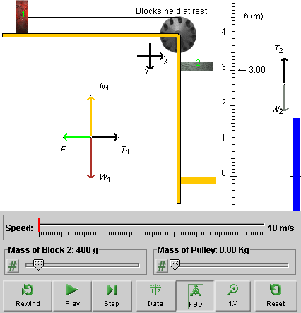

the applet.
the applet.
This page is designed to get you started using the applet. The applet should be open. The step-by-step instructions on this page are to be done in the applet. You may need to toggle back and forth between instructions and applet if your screen space is limited.
Exercise 1. Reset the applet.
The lower edge of Block 2 will be at elevation h = 1.30 m, and the upper edge of the yellow platform at h = 0, as in Figure 1 below.
The mass of Block 2, m2, will be 400 g, as indicated by the first slider. The mass of Block 1, m1, is fixed at 600 g. The pulley's mass, M, will be 0, as indicated by the second slider. These mass values will be assumed throughout this ShowMe document, except where otherwise noted.

Figure 1
Exercise 2. Click on Block 1, and drag it until Block 2 is at elevation h = 3.00 m. Figure 2 below shows what you should see. Note the free-body diagram button is selected and the free-body diagrams for the two blocks are displayed.

Figure 2
If your window size is small, you may have to drag Block 1 beyond the left edge of the window. As long as you don't release the mouse button while doing this, you can keep on dragging the block. Alternatively, you can resize the window by dragging its lower right-hand corner.
Exercise 3. PLAY the motion, and allow it to continue until Block 2 hits the platform at h = 0. Figure 3 below shows what you should see when the block reaches h = 0.
Figure 3
If you look carefully, you will notice a small amount of white space (1 pixel high) between the bottom of Block 2 and the top of the platform. The motion of Block 2 was paused before the block could hit the platform! Actually, at the instant shown in Figure 3, the bottom of Block 2 is at h = 0 and the platform is one pixel below this point.
The platform is at h = 0 before the motion begins. However, as soon as you click Play, the platform is automatically moved downward by one pixel. The motion of the blocks is paused automatically when Block 2 reaches the original platform position at h = 0. That way the applet simulates the conditions in the system when Block 2 is at h = 0 just before the block makes contact with the platform.
Exercise 4. Compare the free-body diagrams in Figures 2 and 3.
Observe that the tensions in Figure 3 are smaller than in Figure 2. The tensions in Figure 3 apply to an instant when the system is in motion, just before making contact with the platform, while the tensions in Figure 2 apply to an instant when the system is at held at rest by applying a force of magnitude F to Block 1, shown in green in the free-body diagram for Block 1 in Figure 2. This force is absent in Figure 3.
Exercise 5. Rewind  the applet.
the applet.
The applet will be reset to the configuration shown in Figure 2 with Block 2 at h = 3.00 m. In the following sections, it will be assumed that the motion has been started at h = 3.00 m so that the Rewind button returns the system to the configuration shown in Figure 2.
Drag Block 1 to the right, and observe the two free-body diagrams. Observe that some forces are represented by dimmed arrows and that there are question marks behind the symbols for the magnitudes of these forces. This is intended to indicate that the applet cannot know the magnitudes of these forces while Block 1 is being dragged. Both F and the two tensions depend on the manner in which Block 1 is being dragged.
Exercise 6. REWIND the applet and PLAY the motion again, but this time PAUSE it button before Block 2 reaches the platform. The free-body diagrams should be as in Figure 3.
REWIND the applet and click the Step button  .
.
The animation is advanced through a discrete time interval. You
can click Step repeatedly and observe how the position, speed,
and energies of the system change in equal time intervals. The
values of these quantities are shown in the Data box. To
display the Data box, click the Data button  .
.

Exercise 1. REWIND the applet and make sure that Block 3 is at h = 3.00 m. Otherwise, RESET the applet and drag Block 1 until Block 2 is at h = 3.00 m, as in Figure 4 below.
If necessary, press the free-body diagram button to display the free-body diagrams. You can move the free-body diagrams to a different location by clicking on the center of a diagram and dragging.
Figure 4
The applet displays the message "Blocks held at rest". You can imagine that Block 1 is held fixed by an appropriate force of magnitude F directed to the left. This force is represented by the green arrow in the free-body diagram for Block 1.
Exercise 2. Observe that the free-body diagrams for the two blocks contain the forces of magnitudes T1 and T2 exerted by the string on Blocks 1 and 2, respectively. These forces are represented by black arrows in the free-body diagrams. The quantities T1 and T2 are the tensions in the ends of string attached to Blocks 1 and 2, respectively.
Observe from the free-body diagrams that when the blocks are held at rest, the following equalities hold:
F = T1 = T2 = W2, when blocks at rest,
where W2 is the weight of Block 2.
Display the Data box. The values for T1 and T2 displayed in the Data box should be: T1 = T2 = 3.9 N.
You can check that these values are equal to W2 = m2g = 0.400x9.8.
Exercise 3. REWIND the applet. The applet will be reset to the configuration with Block 2 at elevation h = 3.00 m.
Release the blocks by clicking PLAY, and PAUSE the motion before Block 2 reaches the platform.
Observe the free-body diagrams for the two blocks. Depending on where you pause the motion, the system's configuration will look different. An example is shown in Figure 5 below.
Figure 5
Observe that the free-body diagrams contain no applied force of magnitude F acting on Block 1, that T1 = T2 still, but that T2 < W2.
Display the Data box and verify that now T1 = T2 = 2.4 N, which is less than the value we had in Exercise 2 when the system was held at rest.
Exercise 4. REWIND the applet, drag Block 1, and observe the free-body diagrams. You should see the force of magnitude F and the forces applied by the string to the blocks represented by dimmed arrows with labels that have a question mark behind them.
This is to indicate that, while Block 1 is being dragged, the applet does not "know" with what acceleration the blocks are being dragged. As a result, the dragging force applied to Block 1 and the magnitudes of the forces applied by the string to the two blocks are not known.
Display the Data box, and observe the values for the tensions while dragging Block 1. You should find question marks. Similarly for the magnitude of the acceleration, the speed, and the kinetic energies of the two blocks.
REWIND the applet, and make sure that Block 2 is at h = 3.00 m. Otherwise, RESET the applet and drag Block 1 so that Block 2 is at h = 3.00 m.
PLAY the motion, and observe that the red speedometer needle is moving to the right at a constant rate during the motion. (Figure 6 below shows the needle still at v = 0.)

Figure 6
This uniform increase of the speed implies that the acceleration of the blocks is constant. The Data box displays the magnitude of the acceleration as 3.92 m/s2.
Exercise 2. REWIND the applet, and PLAY the motion until Block 2 reaches the platform at h = 0. Display the Data box.
The Data box should show that Block 2 reaches the platform at t = 1.24 s with a speed v of 4.8 m/s. This gives for the magnitude of the acceleration: a = 4.8/1.24 = 3.87 m/s2. Compare this to the value a = 3.92 m/s2 shown in the Data box. Why is there a discrepancy of 0.05 m/s2?
Our calculation of a is to one more significant figure than the value of v warrants. When rounding 3.87 m/s2 to two significant figures, one obtains 3.9 m/s2, which agrees with the applet's value of 3.92 m/s2 within two significant figures.
Exercise 1. REWIND the applet, and make sure that Block 2 is at h = 3.00 m. Otherwise, RESET the applet and drag Block 1 so that Block 2 is at h = 3.00 m.
Use the Pulley Mass slider, shown on the right in Figure 7 below, to set the pulley's mass to M = 1.00 kg. Display the Data box and check that the pulley's moment of inertia, I, is equal to 0.125 kg m2.
Figure 7
The applet assumes the pulley is a disk of uniform mass density and calculates the moment of inertia of the pulley from the mass M and the radius R by the equation: I = 0.5MR2. R is fixed in the applet at 0.500 m.
While the blocks are still held at rest, observe the tensions in the string on both sides of the pulley. The tensions are the same as when the pulley's mass is zero,
T1 = T2 = W2 = 3.9 N.
Now click PLAY, and then click Pause while the motion is in progress. Display the Data box, and observe the tensions in the two ends of the string and the acceleration of the blocks:
T1 = 1.6 N, T2 = 2.9 N, a = 2.61 m/s2 .
Now that the pulley has mass, the tensions are different on different sides of the pulley and both are different from what they are in the massless pulley case. Also, the magnitude of the acceleration of the blocks is less when the pulley has mass than when it does not.
Note that the radius (0.500 m) of the pulley has an unrealistically large value given the masses of the blocks and of the pulley. This exaggeration is necessary to make the influence of a non-zero pulley mass noticeable.
Exercise 1. RESET the applet. Click the free-body diagram button to display the free-body diagrams. The following Figure 8 shows what you should see.
Figure 8
Click on the yellow platform and drag it upward until it touches Block 2. Observe the free-body diagrams. Figure 9 below shows what you should see.
Figure 9
The forces acting on the blocks are shown dimmed and the force symbols have question marks behind them. In addition, there is a normal force N2 shown acting on Block 2. The dimming and the question marks are supposed to indicate that one cannot be certain about the magnitudes of these forces under the given circumstances, because they depend on the magnitude F of the force that is being applied to Block 1.
Display the Data box and observe that the values of the tensions are displayed with question marks while Block 2 is resting on the platform.
The same is true while the blocks are being dragged upward. In this case, also the speed and the magnitude of the acceleration have question marks behind them. Drag Block 1 and observe.
Exercise 2. Drag Block 1 and observe changes in the blue energy bar on the right. Its length, measured from the h = 0 level, represents the potential energy PE2 of the pair consisting of Block 2 and the earth (the "potential energy of Block 2" for short). The length of the bar increases as Block 2 moves upward and decreases as Block 2 moves downward.
Drag the platform below h = 0, and then drag Block 1 until the lower edge of Block 2 is below h = 0. The potential energy bar should have its top below the h level, indicating that the potential energy is negative in this configuration.
The length of the energy bar, measured from the h = 0 level, also represents the total mechanical energy of the system.
Click Play and observe the energy bar during the motion. Its total length, representing the total mechanical energy of the system, is constant during the motion and equal to the initial potential energy when the system is still at rest. The individual components of the energy bar, representing the kinetic energies of the two blocks and the pulley and the potential energy of Block 2, vary in size during the motion.
Observe the values of these energies in the Data box. The different parts of the energy bar are color-matched with the energy data in the Data box.
Exercise 3. REWIND the applet. PLAY the motion and PAUSE
It. Click on the Zoom button  , repeatedly. This will allow
you to view the energy bar at different magnifications. This is
useful when the bar is either quite short or so large that it
goes off the screen.
, repeatedly. This will allow
you to view the energy bar at different magnifications. This is
useful when the bar is either quite short or so large that it
goes off the screen.
Keep on clicking the button until you have cycled through all magnifications.